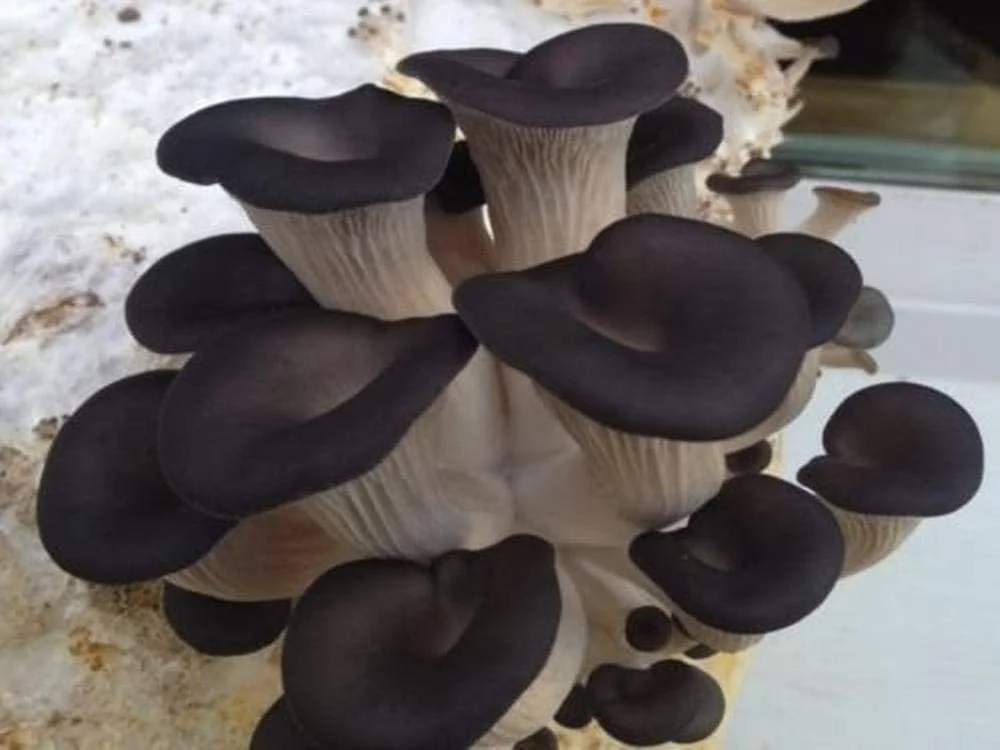
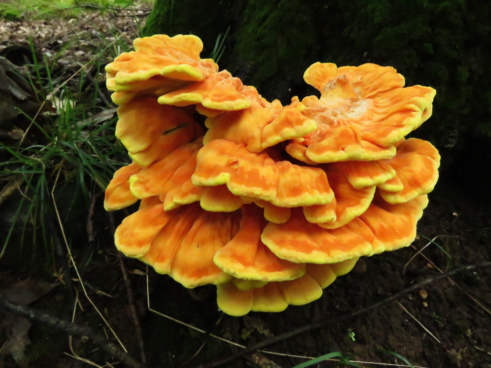

Mushrooms
A mushroom or toadstool is the fleshy, spore-bearing fruiting body of a fungus, typically produced above ground, on soil, or on its food source. A mushroom is the reproductive structure produced by some fungi. The spores blow away into the wind, or are spread by other means, such as animal feeding. If they land on a suitable substrate (such as wood or soil) spores will germinate to form a network of microscopic rooting threads (mycelium) which penetrate into their new food source. Unlike the mushroom, which pops up then passes away quickly, the mycelium persists, often for many years, extracting nutrients and sending up its annual crop of mushrooms.
 Black Pearl Oyster MushroomsMushrooms are edible fungus. They are one of the best sources of selenium, which helps your body make antioxidants that can reduce cell damage. Mushrooms are a good source of vitamins B2, B3, B5 and B9, also known as folate. B vitamins are essential for cell growth and formation. Mushrooms provide a range of antioxidants and other nutrients that may contribute to heart health and protect the body from cancer, among other benefits. The nutritional profile will depend on the type of mushroom. Beyond the diet, mushrooms feature in some types of traditional medicine.
 Chicken of the Woods Mushrooms